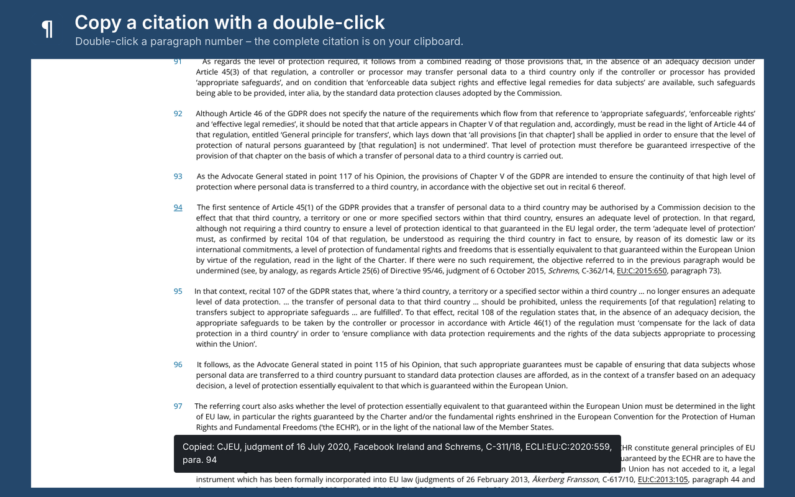
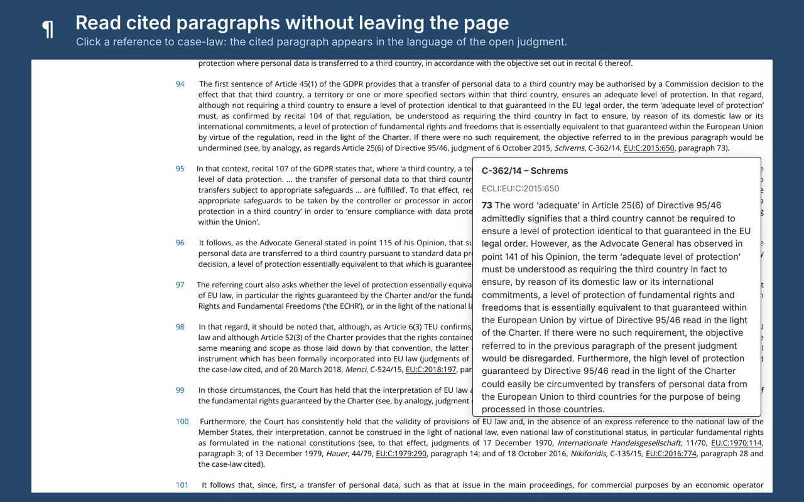

Works on the old InfoCuria website at juris.curia.europa.eu, not on the new InfoCuria.
Anyone who writes about EU law spends a lot of time copying case names, dates, case numbers and ECLIs out of InfoCuria. This extension does that part for you. It reads everything from InfoCuria itself, so nothing in a citation is guessed: if an element cannot be read reliably, it is left out and you are told.
Copy a full citation with a double-click
Double-click a paragraph number in a judgment and the complete citation is on your clipboard, for example CJEU, judgment of 16 July 2020, Facebook Ireland and Schrems, C-311/18, ECLI:EU:C:2020:559, para. 94. It works for judgments, orders, Opinions of Advocates General and Opinions of the Court.

Copy a quote together with its pinpoint citation
Select a passage and click “Copy with citation”. You get the quote in quotation marks followed by the citation with the right paragraph number, or the range of paragraphs if your selection spans several.

Read cited paragraphs without leaving the page
Every ECLI in the text becomes a link. Click it and a pop-up shows the cited paragraph from the other decision: in the language of the judgment you are reading, otherwise in English, otherwise in the language of the case.

OSCOLA, English, German or your own citation style
Choose one of six templates, including OSCOLA and the style the Court itself uses, or build your own: switch each element on or off, change its order, its form (for example “para. 94”, “[94]” or “Rn. 94”) and the separator.

Find your way around the case
The side panel lists the related documents of the case, such as the Advocate General’s Opinion, the appeal or the lower instance. It links to a search for decisions that cite the judgment and shows a clickable outline of the judgment.

How to install
- On GitHub, click Code → Download ZIP and unzip the file.
- Open
chrome://extensionsin Chrome (version 116 or later). - Switch on Developer mode.
- Click Load unpacked and select the
extensionfolder. - Open a judgment on juris.curia.europa.eu and reload the page once.
Frequently asked questions
Is the Research tool for InfoCuria free?
Yes. It is free and open source under the MIT licence.
Does it work on the new InfoCuria website?
No. It works on the old InfoCuria case-law pages at juris.curia.europa.eu, which are still online.
Which citation styles are available?
Six templates: German standard, German as the Court cites, German short, English standard, English as the Court cites, and OSCOLA. You can also build your own style element by element.
Which browsers are supported?
It is built and tested for Google Chrome from version 116. Microsoft Edge supports the same extension interfaces, so it should work there too, but it has not been tested in Edge.
Does the extension collect data?
No. It only loads public pages of InfoCuria and stores two settings locally in your browser.